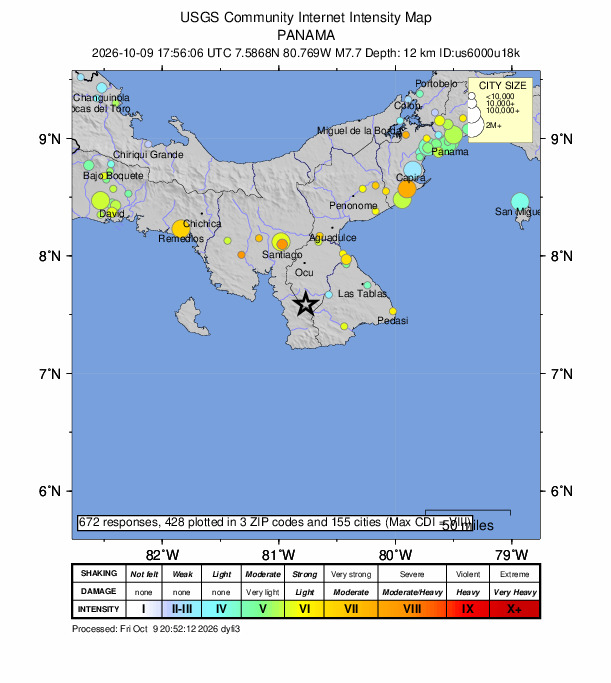

October 09, 2026
Panama's M7.7: The Third-Strongest Earthquake of 2026

USGS Community Internet Intensity Map ("Did You Feel It?" responses, 672 reports)
The planet rang its bell 331 times at magnitude 2.5 or greater this week — and the loudest ring came Friday afternoon in Panama.
At 12:56 PM local time (1:56 PM Eastern), a magnitude 7.7 earthquake struck about 12 kilometers west-southwest of Pitaloza Arriba, in Panama's central Herrera province. It was shallow — roughly 12.6 km deep — and the USGS issued a red alert, meaning extensive shaking impacts are probable. The agency's assessment: about 4.6 million people experienced shaking ranging from moderate (MMI V) to severe (MMI VIII). More than 670 people have already filed "Did You Feel It?" reports (see the map above).
This is now the third-strongest earthquake of 2026, behind the two magnitude 7.8s — June 7 in the Philippines and August 14 in Indonesia, per Fox Weather.
What happened on the ground
This is a developing situation, and the numbers will move as assessments come in. What is confirmed so far, per the Associated Press and USGS:
- Buildings collapsed near the epicenter — a hotel and homes in Tonosí, a church, a government building, and the Dos Continentes hotel; the Iguana Mall sustained minor damage.
- At least 16 people were injured — 15 in Coclé Province, at least one in Penonome.
- Residents of Panama City evacuated into the streets; the shaking was felt as far away as Colombia and Costa Rica.
- Classes were canceled nationwide; Tocumen International Airport suspended operations for safety checks (later resumed); the Panama Canal Authority said canal operations continued normally.
- President José Raúl Mulino called for calm and mobilized resources to affected areas.
The aftershock sequence
A magnitude 7.7 does not arrive alone. By Friday evening, officials reported more than 40 aftershocks (CNN), with the University of Panama's seismologists counting over 45 (AP). The USGS-tracked feeds show the largest so far:
- M6.6 — 14 km west of Río Grande, Panama, at 4:25 PM Eastern (yellow alert, ~26 felt reports)
- Plus a swarm of mid-5s and 4s — USGS counts 24 quakes of magnitude 4.0 or greater in the Azuero region on Friday alone
Aftershocks are the Earth settling into its new shape after a major rupture. They are expected — but some of them can carry strong shaking of their own, and the sequence is still active.
The tsunami warning — and why it was lifted
The U.S. National Weather Service issued a tsunami warning Friday for the coasts of Panama, Colombia, Ecuador, Nicaragua, and Guatemala — the Tsunami Warning Center said waves of 3 to 9 feet were possible in Panama. Later in the day, the warning was lifted: the threat had passed, with no destructive waves expected. (There was never a threat to the United States.)
The rest of the week, for context
Before Friday, the week's largest quake was the M6.3 off Vanuatu on Thursday morning (our morning earthquake-watch post led with it — the planet had other plans). The week's totals from the public USGS-tracked feeds: 331 quakes of M2.5+ in seven days, 133 of them M4.5+. Most of the planet's seismic energy this week went into remote ocean — until it didn't.
We don't forecast here — nobody can. We just read the instruments out loud. And tonight, the instruments say Panama is still shaking. If you're in the region: follow your local authorities' instructions, and check in when you can.
Source: USGS and AP — read the original report
← Back to latest stories